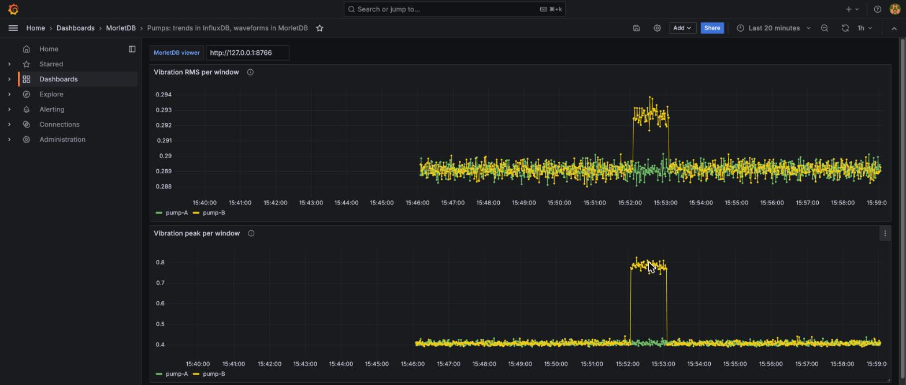
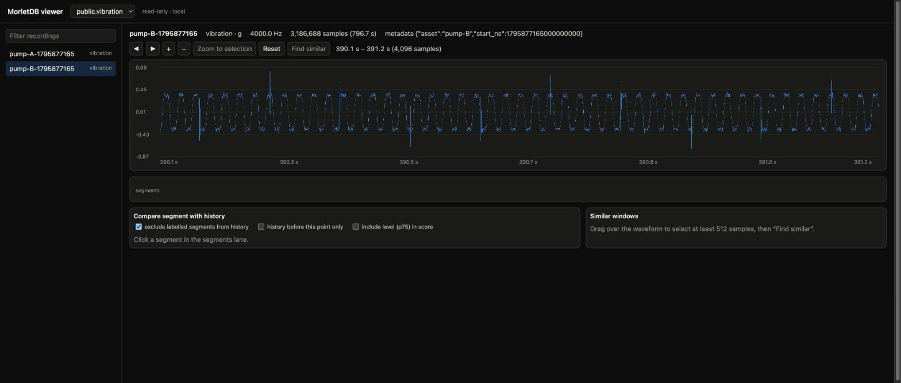

Keep InfluxDB for your trends, put your waveforms in MorletDB
Many plants already run InfluxDB. It collects temperatures, counters, states and alarms, Grafana draws them, and alerts fire when a value crosses a line. That works, and we are not here to replace it.
It gets harder when the same teams start recording waveforms: vibration, motor current or acoustics at several kilohertz. A trend tells you when something changed. To see what changed, you need the samples themselves, kept exactly, and a way to find the earlier moments that looked the same. This post shows how MorletDB and InfluxDB work together so that each does the part it is good at, and how to try it on your own InfluxDB data in a few minutes.
Why waveforms strain a trend database
- One row per sample. In InfluxDB every sample is a point with its own timestamp and field. At 4 kHz that is 4,000 points per second per channel, each carrying the same tags and a timestamp the sample rate already implies.
- Memory and ingest. In our own comparison on one machine-recording workload, InfluxDB 3 Core needed a 4 GB memory cap to finish the load, where MorletDB passed at 256 MB, and MorletDB ingested about 15 times faster with one client (details and every condition below).
- No look-alike search. InfluxDB answers "what was the value at 10:42". It does not answer "when did this bearing last sound like this".
- No calibration history. When a sensor's calibration is corrected, a waveform store must keep the samples and record under which unit and calibration they were read. A trend database simply has the numbers it was sent.
None of this is a fault in InfluxDB. It was built for metrics and events, and it is good at them. Waveforms are a different kind of data.
The division of labour
InfluxDB keeps what it does well: slow telemetry, counters, states, dashboards and alerts. Nothing about that changes, including your Telegraf set-up.
MorletDB takes the high-rate signals. It stores each channel as a uniformly sampled recording, losslessly (every value reads back bit for bit, negative zero included), on PostgreSQL. It finds earlier intervals that look like a given one, can keep the calibration history of a recording (opt-in per collection), and runs unattended on an edge machine.
The bridge connects them. For every window of a recording, say 4,096 samples, MorletDB computes small metrics (minimum, maximum, mean, RMS) from the stored samples and keeps them in a ledger. Telegraf's execd input carries them to InfluxDB as ordinary points, so your dashboards and alerts see them like any other metric. Each point also carries the recording and the exact sample interval it was computed from. That is the way back.
What it looks like
We built this as a runnable example: a synthetic collector writes two pumps at 4 kHz into MorletDB, the bridge publishes metrics per window through Telegraf into InfluxDB 2.7, and Grafana shows them. Pump B has one minute of short impacts.

That difference is the argument in one picture. Short impacts hardly change the energy of a window, so the RMS trend almost hides them; the peak shows that something happened, but not what. Clicking a point in Grafana offers Open waveform in MorletDB, which opens exactly the 4,096 samples behind that point:

From there, the same interval can be compared with the recording's history or searched for in other recordings. The trend tells you when; the waveform shows what.
What we checked
- Nothing lost on the way. Every metric the bridge handed to Telegraf arrived in InfluxDB with the same timestamp, tags and fields, every value bit for bit, and no other point appeared (Telegraf 1.36.4, InfluxDB 2.7.12; 1,342 points in the last of three runs with live data).
- The click lands where it should. The link opened the viewer on the same recording at samples 1,560,576 to 1,564,672, which is 390.1 to 391.2 seconds after its start: the time of the clicked point.
- Waveform and metric belong together. The collector appends each window and publishes its metrics in one transaction, so a metric never describes samples that were not stored.
Try it on your own InfluxDB data
You do not need an export, shell access to a controller, or anything installed on the InfluxDB host. On a laptop with Docker in your network, the trial reads a few minutes of one measurement from InfluxDB 1.x or 2.x with a read-only user or token, gently, in slices of 60 seconds with a pause between them:
cd examples/trial
export INFLUX_USERNAME=reader INFLUX_PASSWORD='...' # InfluxDB 2.x: export INFLUX_TOKEN='...'
docker compose run --rm trial --influx-url http://192.168.0.10:8086 --influx-db plant \
--measurement vibration --start 2026-11-28T10:00:00Z --end 2026-11-28T10:10:00Z
docker compose down -v # removes everything againIt stores the data in a throwaway MorletDB and writes a report: which series became recordings and which were left out and why (slow trends, booleans and strings stay in InfluxDB), whether every value reads back bit for bit, how MorletDB's timestamps compare with the original ones, and the storage per sample. Nothing leaves your network. We tested it against InfluxDB 1.8 and 2.7: what InfluxDB returned was exactly what had been written, negative zero and integer types included, and MorletDB returned exactly that again.
To move history for good, the importer reads line-protocol exports. Every eligible series becomes a recording with its tags in the metadata, and the original timestamps become time anchors, so jitter, gaps and clock steps are kept rather than smoothed away.
What we measured against InfluxDB
In study B3 we loaded the same machine recording into MorletDB 0.3.9 and InfluxDB 3 Core 3.12.2 on one machine: seven channels per acquisition (three at 64 kHz, three at 4 kHz and a temperature at 1 Hz), written by one client. All loads read back bit for bit in both. MorletDB ingested about 15 times faster without durable acknowledgement and about 130 times faster with it; there, InfluxDB's once-a-second WAL flush dominates a single sequential client, and several concurrent writers, which we did not measure, would narrow that gap. After InfluxDB's snapshot to Parquet, MorletDB's database took 2.5 times less space than InfluxDB's volume, or about 1.2 times less counting MorletDB's write-ahead log. InfluxDB needed a 4 GB memory cap to finish the load, MorletDB 256 MB.
This is one workload, one client and one machine, not a general ranking. Other data, several writers and InfluxDB 1.x and 2.x were not part of it. The study's page lists every condition.
What it does not do yet
- Beta. MorletDB 0.4.0-beta.7 runs on a single node with PostgreSQL 17 to 19.
- The bridge is experimental. Telegraf buffers in memory and does not confirm delivery to its inputs, so delivery beyond the handoff is best effort; MorletDB's ledger keeps every metric, but there is no automatic read-back check of InfluxDB yet.
- No InfluxQL or Flux in MorletDB, and no InfluxDB write API: waveforms come in through MorletDB's collectors or SDK, not through Telegraf, whose points cannot guarantee even sampling or bit-exact values.
- InfluxDB 3 is covered by the importer through line-protocol exports, not by the live trial.